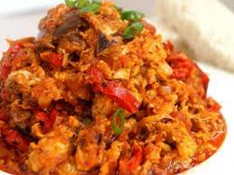

Egg Stew Recipe

Description
Today, I am going to show you how to make egg stew
for one person to last roughly a week. Find below the ingredients
you'll need.
Ingredients
- Tomatoes
- Onions
- Garlic
- Ginger
- Salt
- Kpakpo Shito
- Dawadawa
- Red pepper
- Maggi
- Eggs
Steps
- Blend two onions and four tomatoes
- Add salt, kpakpo shito, dawadawa, red pepper, ginger and garlic to the mix
- Pour oil in a suacepan and cook tomato paste for 5 minutes
- Add your blended sauce to the cooked paste
- Add cut onions and other vegetables of your choice and let it cook
- Add Maggi and stir continually
- Add however number of eggs you want
- Leave for about 10 minutes and stir continually
There you go, you've made egg stew!
It pairs very nicely with jollof rice
and chicken